Functions to do fast regression modelling. The functions return a tibble with statistics. Use plot() for an extensive model visualisation.
regression(x, ...)
# S3 method for default
regression(x, y = NULL, type = "lm", family = stats::gaussian, ...)
# S3 method for data.frame
regression(x, var1, var2 = NULL, type = "lm", family = stats::gaussian, ...)
# S3 method for certestats_reg
plot(x, ...)
# S3 method for certestats_reg
autoplot(object, ...)runif(10) |> regression()
#> # A tibble: 2 × 5
#> term estimate std.error statistic p.value
#> * <chr> <dbl> <dbl> <dbl> <dbl>
#> 1 (Intercept) 8.74 2.32 3.76 0.00555
#> 2 x -5.20 3.45 -1.51 0.170
data.frame(x = 1:50, y = runif(50)) |>
regression(x, y)
#> # A tibble: 2 × 5
#> term estimate std.error statistic p.value
#> * <chr> <dbl> <dbl> <dbl> <dbl>
#> 1 (Intercept) 0.491 0.0873 5.62 0.000000957
#> 2 x -0.000209 0.00298 -0.0702 0.944
mrsa_from_blood_years <- c(0, 1, 0, 0, 2, 0, 1, 3, 1, 2, 3, 1, 2)
mrsa_from_blood_years |> plot()
mrsa_from_blood_years |> regression()
#> # A tibble: 2 × 5
#> term estimate std.error statistic p.value
#> * <chr> <dbl> <dbl> <dbl> <dbl>
#> 1 (Intercept) 4.33 1.38 3.14 0.00946
#> 2 x 2.17 0.854 2.54 0.0277
mrsa_from_blood_years |> regression() |> plot()
#> `geom_smooth()` using formula = 'y ~ x'
